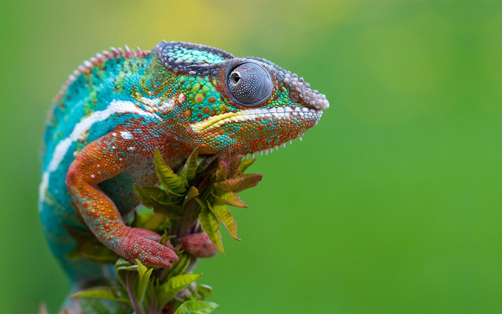

<ion-toolbar color="primary">
  <ion-img src="/assets/logo.png"></ion-img>
</ion-toolbar>

<ion-content>
  <ion-item-divider style="background:white; height: 30px;">
  </ion-item-divider>
  <ion-text>
    <h1 class="text">Mis favoritos</h1>
  </ion-text>
  
  <div cards>
    <div class="grid-full">
      <ion-row>
        <ion-col *ngFor="let i of [1,1,1,1,1]">
          <ion-card >
            
            <h1 orange style="padding-top: 0px;">Camaleón</h1>
            <ion-button  (click)="onClick()" color="danger">
              <ion-icon slot="icon-only" 
              name="heart" [name]="favorito?'heart':'heart-outline'">
            </ion-icon>
            </ion-button>
            <ion-button href="/description" color="primary">Ver</ion-button>
          </ion-card>
        </ion-col>
      </ion-row>
    </div>
  </div>
</ion-content>
<app-footer></app-footer>